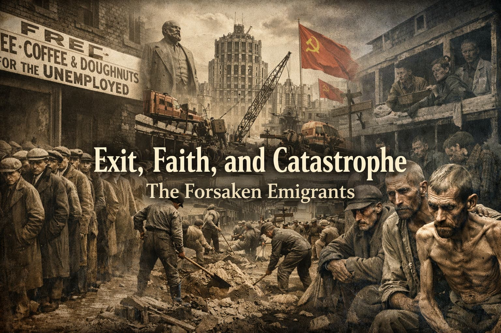
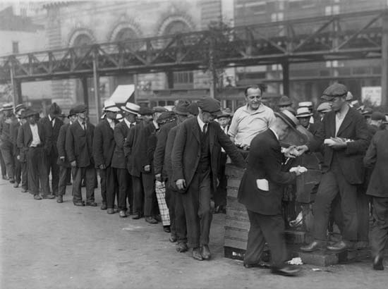
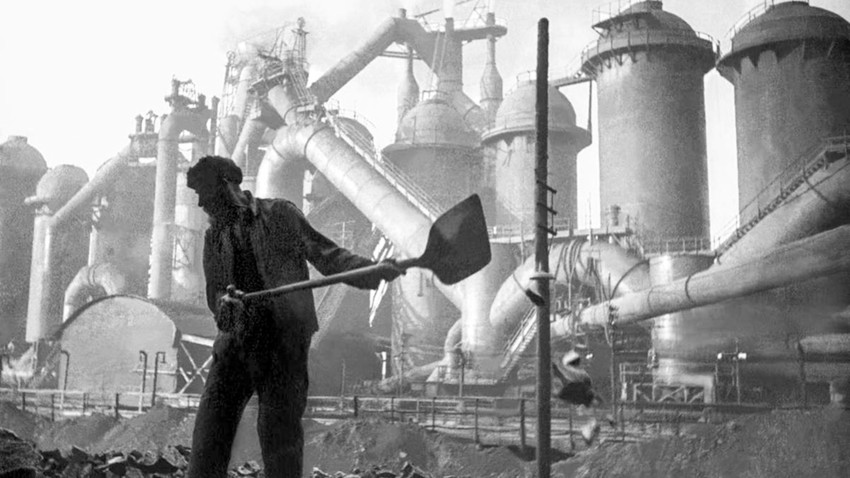
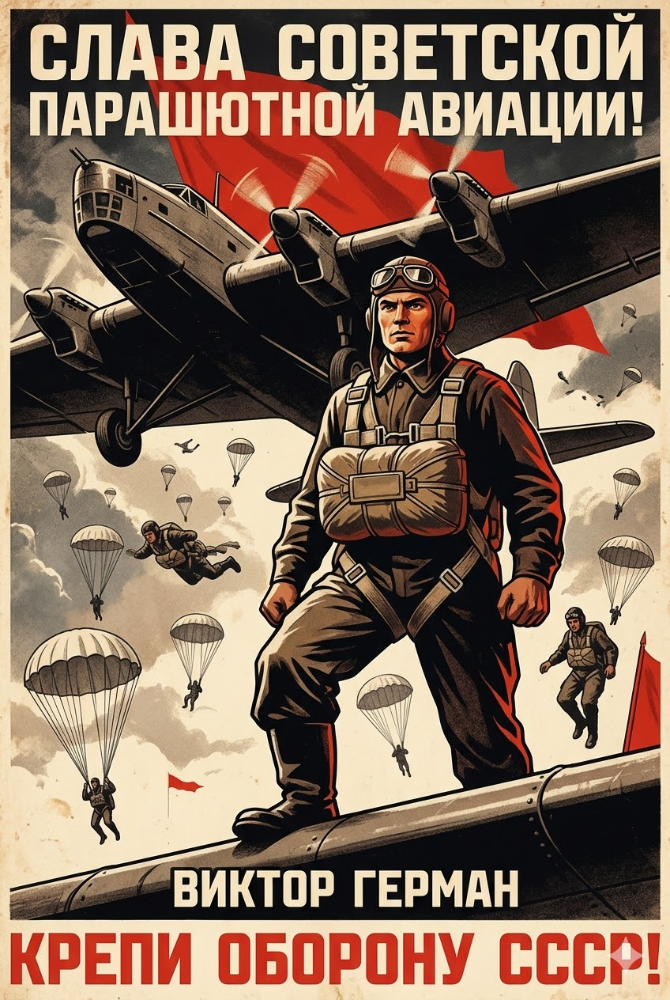
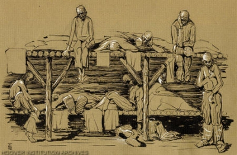
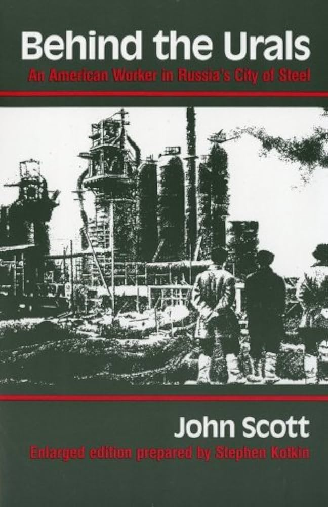
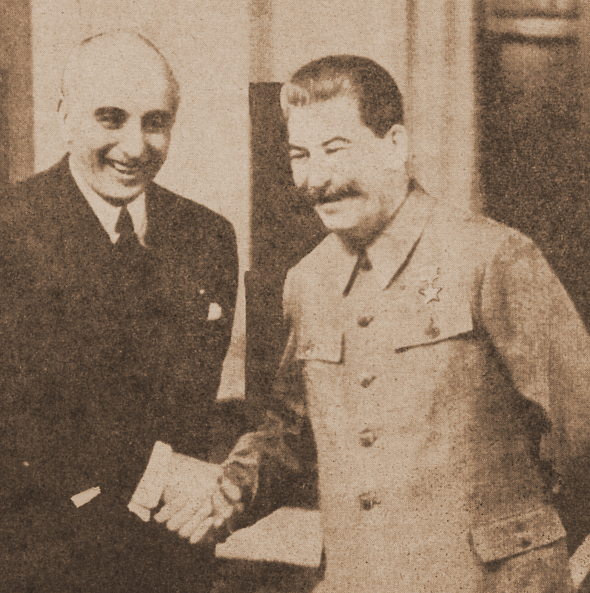
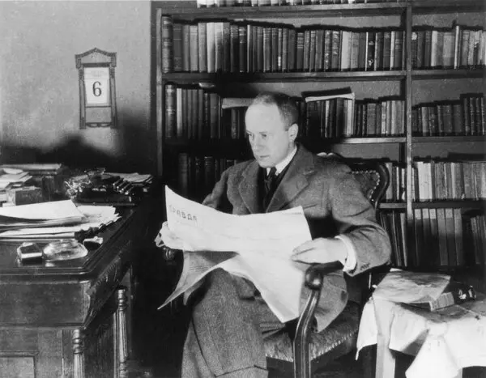

Where We're Going
- I. Exit as a political act — why Americans left
- II. The scale of the exodus, 1931–1935
- III. Three Americans: Herman, Sgovio, Scott
- IV. From guests to enemies — the logic of the purges
- V. The mechanisms of the Great Terror
- VI. Comparative failure: visibility vs. concealment
Section I
Why did thousands of Americans choose to leave — and what does that choice mean?
Beyond Protest
- Depression produced three responses: voice, loyalty, and exit
- Most protests assumed continued membership in the U.S. — reform from within
- Exit is neither apathy nor despair — it is a reasoned verdict on a failed system
- Emigration to the USSR: the ultimate vote of no confidence

New York Breadline, c. 1930–32 · Public Domain
The Rational Calculus
- Emigrants were skilled tradespeople — engineers, machinists, auto workers, miners — not mostly political idealists
- Industrial unemployment reached nearly 25%; millions of experienced workers faced prolonged joblessness with no safety net
- In 1931, Soviet Amtorg ran open advertisements in U.S. newspapers for 6,000 skilled positions
- The response was overwhelming: over 100,000 applications in just eight months
What 100,000 Applications Means
The Soviet offer required no ideological conversion
It only required the perception that the USSR could deliver what the U.S. could not
Amtorg ultimately hired roughly 10,000 Americans that year
The scale of the surplus tells us how permanent the crisis felt
⏸ Pause & Reflect
What is the difference between leaving a country as a refugee and leaving as an act of political protest?
Does the distinction matter historically? Does it matter morally?
Section II
1931–1935: Where they came from, and where they went
Where They Came From
- Detroit, Pittsburgh, Pennsylvania coal country, Midwest farm machinery towns
- Ford cut workforce from 128,000 → 37,000 by 1931
- Steel at 12% capacity
- Not marginal workers — the skilled core of American industry
- Stalin's First Five-Year Plan, 1928–1932
- Massive new industrial facilities — no existing infrastructure
- Technical knowledge resided in the American workforce
- The Depression made exactly the right labor available
The Showcase Projects
- Ford Model A facility transplanted from Detroit
- "American Village" nearby — baseball diamonds included
- One match drew 25,000 Soviet spectators
- Designed by Albert Kahn — same architect as Ford River Rouge
- Largest single construction project in the world
- Described as a frontier boomtown
- Agricultural machinery for collectivization
- American engineers ran production lines
- Soviet press showcased as proof of socialism's superiority
The First Months
- Housing — basic, shared, but stable
- Wages paid; work provided; no breadlines
- Psychological relief of purposeful labor after enforced idleness
- Many accounts describe something close to euphoria

Magnitogorsk Steel Combine Construction, c. 1931–33
⏸ Pause & Reflect
What would a contemporary American worker have needed to believe — and what would they have needed to not know — for Soviet recruitment to be persuasive?
- That capitalism had failed permanently, not temporarily
- That the USSR's promises of full employment were genuine
- That the Soviet government would keep its contracts
- All of the above
Section III
Herman, Sgovio, and Scott — the same decision, divergent fates
Victor Herman
- Left Detroit 1931, age 16, with his Ford assembly-line father
- Champion parachutist; celebrity at Soviet state events
- 1938: Arrested for refusing to renounce U.S. citizenship
- Kolyma gold mines — 18 years in the Gulag

Soviet Aviation Sport, 1930s · State propaganda context
Thomas Sgovio
- Italian-American artist from Buffalo; emigrated 1935 — driven by political idealism, not economic desperation
- 1938: Arrested outside the U.S. embassy while renewing his passport
- Sixteen years at Kolyma and in internal exile
- Survived by secretly drawing portraits on cigarette paper scraps

Thomas Sgovio, Gulag Portrait Drawing · Hoover Institution, Stanford
John Scott
- Wisconsin welder; Magnitogorsk 1931 — lived as Soviet workers lived
- Married a Russian woman; worked up to foreman; survived the purges
- Protected by his technical utility
- Behind the Urals (1942): neither celebration nor condemnation — observation

Behind the Urals, John Scott, 1942
Three Fates, One System
- Victim of national operations targeting foreigners as spy suspects
- Crime: would not renounce citizenship
- 18 years, Kolyma
- Victim of paranoia about embassy contact
- Arrested at the embassy threshold
- 16 years, Kolyma
- Protected by technical utility
- Too skilled to execute
- Survived; returned; published
⏸ Pause & Reflect
Herman, Sgovio, and Scott made the same initial decision — but their fates diverged sharply.
What variables explain the differences? Does survivorship tell us anything reliable about the system they survived?
Section IV
The logic of the purges — how the reclassification happened
The Reclassification of Foreigners
- As early as 1932–33: Soviet state begins confiscating foreign workers' passports for "safekeeping"
- Without passports — workers cannot leave
- Short-term contracts became indefinite obligations — through administrative procedure, not explicit coercion
- Any complaint about conditions was actionable as anti-Soviet agitation
The National Operations
- Americans reclassified as "Trotskyist spies" or agents of Wall Street and Roosevelt
- Hundreds arrested at or near U.S. embassy gates while renewing documents
- Many executed at the Butovo firing range outside Moscow
- 141 Finnish-Americans shot en masse; buried at Sandarmokh
The Embassy That Wouldn't Help
- Ambassador Joseph Davies instructed to maintain functional relations with Stalin
- Reported show trial confessions as "beyond reasonable doubt" genuine
- Americans who trusted the embassy as a lifeline found it a dead end
- Diplomatic calculation vs. the lives of U.S. citizens

Ambassador Joseph Davies, Moscow, 1937–38
⏸ Pause & Reflect
Ambassador Davies reported the show trials as fair proceedings.
What institutional pressures, ideological commitments, and diplomatic calculations might explain his judgment? Is this a case of deception, self-deception, or something else?
Section V
Not a convulsion — a quota-driven administrative operation
The Great Terror
A period of intense political repression and mass arrests in the Soviet Union, 1936–1938
Also known as the Great Purge or Yezhovshchina (after NKVD chief Nikolai Yezhov)
- Targeted perceived enemies within the Communist Party, the military, ethnic minorities, and ordinary citizens
- Combined public show trials with secret, quota-driven arrests and executions
- Resulted in roughly 700,000–1.2 million deaths and over 1.5 million sent to the Gulag
- The Americans we have discussed were caught in this machinery — reclassified from useful workers to suspected “foreign agents”
Order No. 00447 and the Troika System
- Terror officially dated 1936–1938; peak intensity July 1937–November 1938
- Nikolai Yezhov (NKVD head) implemented via secret troikas — three-man tribunals, no defense, no appeal
- Order 00447 (July 1937): regional arrest quotas — Category 1 (execution) / Category 2 (Gulag)
- Original targets: 259,450 arrests; 72,950 executions

NKVD Order No. 00447, July 1937 · Soviet State Archive
The Kulak Operation: Final Count
- Stalin personally approved repeated quota increases throughout 1937–38
- Operation 00447 alone: 669,929 arrested by November 1938
- Of those: 376,202 executed — more than half
- Source: Soviet archives opened after 1991 — considered reliable by historians
The Moscow Show Trials
- Aug. 1936 — Trial of the Sixteen: Zinoviev, Kamenev — "plotting with Trotsky"; all executed
- Jan. 1937 — Trial of the Seventeen: sabotage, espionage for Germany and Japan
- Mar. 1938 — Trial of the Twenty-One: Bukharin, Rykov, Yagoda; prosecutor Vyshinsky demanded "shoot the mad dogs"
The Red Army Purge and Total Scale
- Nearly ⅔ of all general-grade officers arrested
- 780 of 1,863 highest-ranking officers executed
- 3 of 5 Soviet marshals shot
- Army facing Hitler in 1941 had been decapitated three years earlier
- 681,692 official executions, 1937–38
- Total deaths (incl. custody): 700,000 – 1.2 million
- More than 1.5 million arrested and sent to the Gulag
- Source: Memorial archives + Khlevniuk
⏸ Pause & Reflect
NKVD Order 00447 assigned arrest and execution quotas by region. What does the use of production-style quotas for killing reveal about the Soviet state?
- The Terror was driven by personal vendettas, not policy
- The Terror was state policy administered as a bureaucratic operation
- The quotas show the state was trying to limit casualties
- Stalin had little direct control over regional NKVD operations
Section VI
Visibility vs. concealment — the structural difference that mattered
Two Kinds of Failure
- Failure was visible — Hoovervilles, breadlines, Dust Bowl documented in newspapers and FSA photographs
- Unemployment figures debated publicly
- Governing party voted out in 1932
- Crisis acknowledged; New Deal enacted
- Failure was concealed — Ukrainian famine 1932–33 denied entirely
- Reporting famine internally was prosecutable
- Great Terror operated at night, in secret, under classified quotas
- Western correspondents rewarded for falsifying accounts
Walter Duranty and Journalistic Complicity
- New York Times Moscow correspondent — most prominent Western journalist in the USSR
- Dismissed famine reports as anti-Soviet propaganda
- Won the Pulitzer Prize for his reporting in 1932
- Correspondents who reported accurately were expelled; Duranty was given access

Walter Duranty, New York Times Moscow Bureau, c. 1932
⏸ Pause & Reflect
Duranty's Pulitzer has never been revoked.
What does this debate reveal about how journalism, institutions, and historical accountability interact? What would revoking — or not revoking — the prize actually accomplish?
What the New Deal Actually Did
- Did not end the Depression — wartime mobilization did
- Did not equal Soviet socialism in full-employment promise
- Did: make failure survivable without terror
- FSA photographs, fireside chats, letters to Eleanor Roosevelt — all forms of documented, legible crisis
The Exchange They Made
The emigrants made a rational calculation based on available evidence
The Soviet Union offered work. The United States did not. They were right.
What they could not know — and what the Durantys were suppressing —
The full employment came at the cost of a totalitarian apparatus that would consume many of them
They traded uncertainty for certainty.
For most, the exchange was catastrophic.
The Open Question
- Documented suffering is not the same as remedied suffering
- FSA photographs did not feed anyone
- The New Deal's acknowledgment of crisis did not end it
- The great distinction between American and Soviet failure was visibility vs. concealment
Key Terms
- Exit / Voice / Loyalty — Hirschman's framework
- Amtorg — Soviet trade agency, recruiter
- First Five-Year Plan
- Kolyma — deadliest Gulag site
- Yezhovshchina — the Terror's Russian name
- Troika system — three-man tribunals
- National Operations — ethnic targeting
- Holodomor — Ukrainian famine, 1932–33